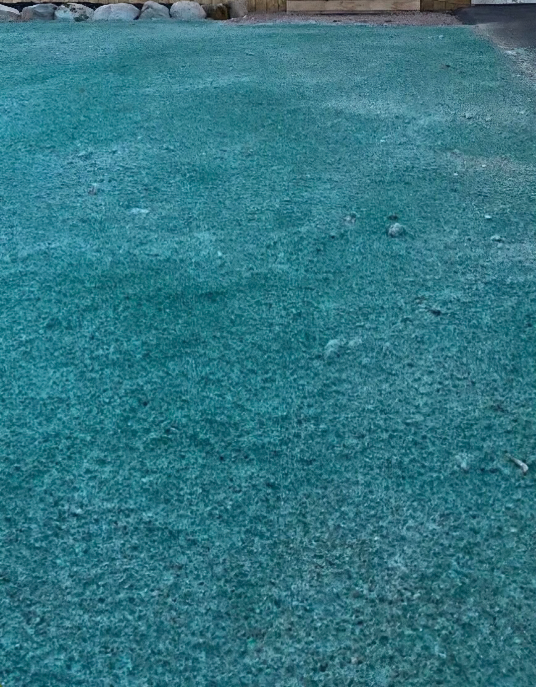
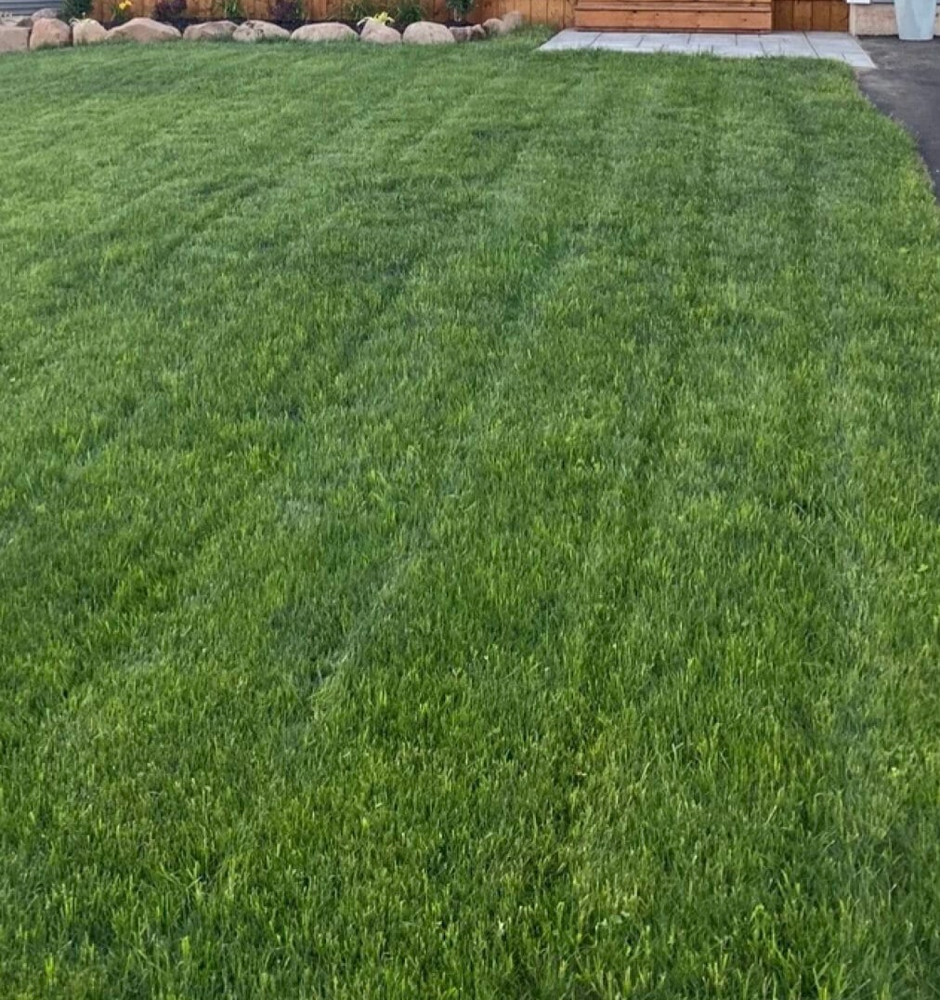

Dé revolutie in gazonaanleg met hydroseeding. Snel, voordelig en 100% succesgarantie.
Geen gedoe met lange mailwisselingen. Stuur ons een appje en ontvang binnen 24 uur een reactie.
Omdat het graszaad muurvast in onze biologische mulchlaag zit, krijgt het gazon gegarandeerd een perfecte start.
Zelf gezaaid en opgeknaagd door de vogels? Wij spuiten de kale plekken of het hele veld in één keer weer kerngezond.
Het indrukwekkende verschil tussen kale grond en ons droomgazon.


Waarom traditioneel inzaaien onderaan de streep vaak duizenden euro's extra kost.
| Methode | Richtprijs (250 m²) | Risico's & Verborgen kosten | Eindresultaat |
|---|---|---|---|
| Traditioneel graszaad | ± € 350,- (Let op: vaak dubbele kosten!) |
Extreem Hoog Risico Vogels eten het zaad op, wind waait het weg. Mislukt het? Dan moet je opnieuw grond bewerken, nieuw zaad kopen en weer weken wachten. Je bent dus al snel € 700,- én maanden tijd kwijt. | Vaak onegaal met kale plekken en veel onkruid. |
| Graszoden leggen | ± € 1.750,- | Laag risico Wel direct groen, maar je betaalt absoluut de hoofdprijs en het kost je dagenlang loodzwaar kruiwagens sjouwen en rollen leggen. | Direct een strak gazon, maar extreem duur. |
| ✨ Spraygroen Hydroseeding | ± € 750,- (Inclusief garantie) |
NUL RISICO Het zaad zit vastgeplakt in een beschermende, voedende mulchlaag. Vogels kunnen er niet bij en wind krijgt geen vat. **Het lukt in één keer.** Alleen water geven! |